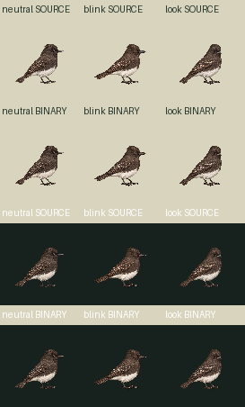
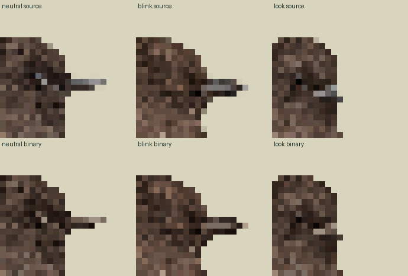
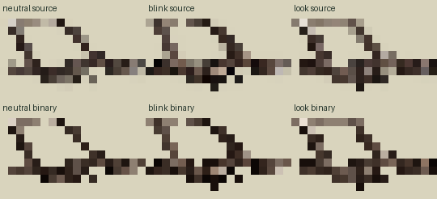

Zero calls, zero new drawings and zero new slots claimed. Three existing source drawings, including registeredclosed9b499… and its raw724alias10446… (ONE drawing), form a separate uniform91square/density1 proposal. Exact current96PNGs/profiles/bindings are preserved.
Legacy96 at90.947world | source91RGBA | binary/common64color91 | enlargedbinary
Whole96→91 explicitfloor-center nearest, no sourcebody fit/offset or painting. StraightRGBA source91 is preserved separately from optionalbinaryalpha128/common63opaqueRGB+transparent/no-dither derivative. Exactcodec866/865/855rects,2586total; three91squareframes24,843decoded pixels. Codec pass is separate from normal-size source/eye/toe visual review.
Declaredoldworld90.947368 (browser90.9375CSSrounding), newworld91 (+0.05787037%). Pivot57,75 scaled54.03125,71.09375 thenexplicitlyrounded54,71 (delta−.03125,−.09375world). No foot snap. contacts[]/geometryReviewedfalse/supportWorldnull. Warm-brown/pale-edge sourceplumagelimit and minor native blink/look feather/toe redraw retained. Timing authored; no smooth head-turn intermediate or biological frequency claim.



Loading…
Idle awake90ticksloop; separateblink90/3/90loop retains oldblinkprofile timing; look30/12/30one-shot retains explicitlook timing. Existing legacyidle/blink/lookbindings unchanged. No fullschemaZod/Mac admission, productionpins/fidelitylabels UNSUPPLIED, activationnone.